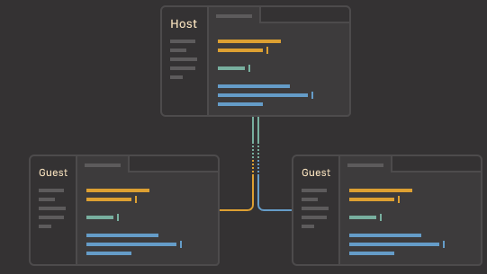

A hackable text editor for the 21st Century
Teletype for Atom
Great things happen when developers work together—from teaching and sharing knowledge to building better software. Teletype for Atom makes collaborating on code just as easy as it is to code alone, right from your editor. Share your workspace and edit code together in real time. To start collaborating, open Teletype in Atom and install the package.
Code better, together
Working on code together in real time is valuable for knowledge sharing and producing quality software. The Teletype package for Atom aspires to make it as easy for developers to code together as it is for them to code alone. Teletype introduces the concept of real-time "portals" for sharing workspaces. When a host opens a portal, their active tab becomes a shared workspace. There, invited collaborators can join in and make edits in real time. As the host moves between files, collaborators follow along with the active tab automatically.